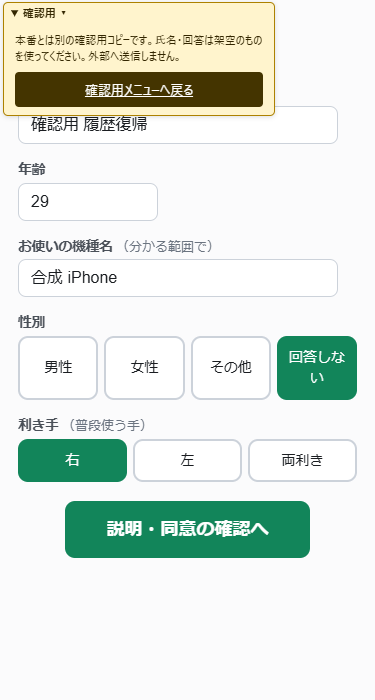
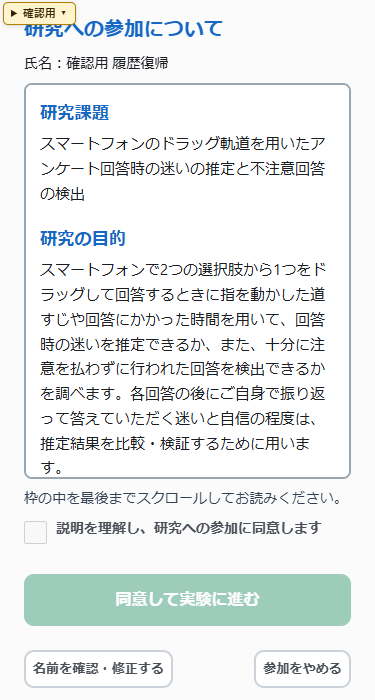

確認用サイトの「戻る・進む」で調べたこと
本番データを使わず、別の保存領域と架空の同意・回答で確認しました。
再現できた経路を分けています
| 操作 | 修正前のChrome | 修正後のChrome |
|---|---|---|
| ブラウザーの戻る → 進む → 最初の6案内 → 入力 | 入力・同意まで進めた | 同じページの復帰と入力を確認 |
| 黄色い「確認用」メニューのリンク → ブラウザーの戻る | 案内は進むが、入力後の次へで止まった | 入力・同意まで進めた |
| 同意済みの途中 → 確認用メニュー → 履歴で戻る | 閉じた保存処理の復元に問題があった | 同じ同意・保存段階から再開できた |
今回報告されたSafariの「ブラウザーの戻る・進む」だけの不具合は、Chromeでは再現していません。別の経路で再現した確認用サイト固有の不具合を直しました。Safariでも同じ原因だったとは断定していません。
原因と変更
確認用メニューへ移るリンクは、保存を完了してから保存用Workerを閉じ、別タブとの排他を解放していました。その後ブラウザーが古いページをメモリーから復元すると、閉じた保存処理を再利用しようとして準備が完了しませんでした。開いた黄色いメニューが入力欄に重なる状態も残っていました。
このリンクで保存処理を閉じたページだけは、履歴から復元されたときに再読み込みし、保存済み状態から再開します。復帰時には黄色いメニューを閉じます。通常のブラウザーの戻る・進むでは、開いているページをそのまま復元します。
変更は確認用サイトの補助処理と生成記録の2ファイルです。本番アプリの14ファイルは変更していません。
タップと保存の検証
入力欄への単指タップと文字入力、同意への進行、同じセッション・同意日時・受領日時・保存段階の保持、別タブの同時操作防止を確認しました。公開済み19ファイルの一致も確認しています。
再現画面

